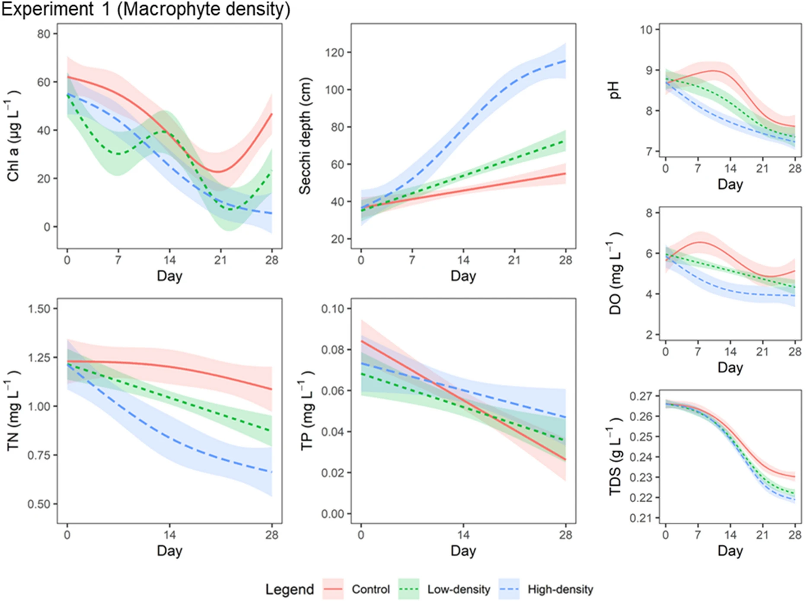
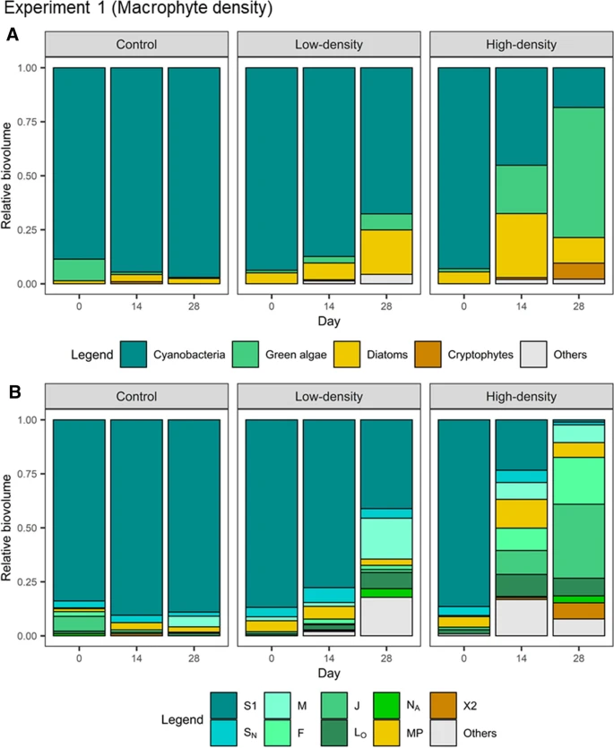
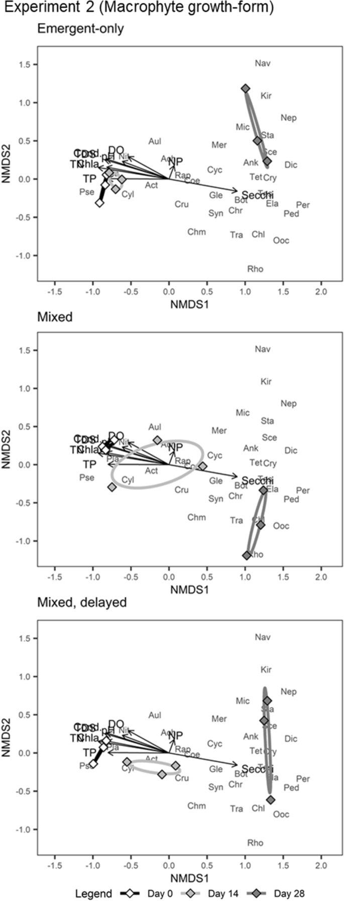

Design of the in-situ mesocosm experiment.

Changes in water parameters in mesocosms during the macrophyte density experiment.

Relative biovolume composition of phytoplankton in the control and macrophyte treatments.
